Hook: qum soati
0:00–0:04OvozDiktor: «Vaqtni sotib olib bo'lmaydi. Lekin sen uni har kuni sotasan.»
Men qo'shamanTo'liq kodda, Veo kerak emas (tayyor: kod/hook.mp4).
Har sahnada: rasm, ovoz qatori, Veo prompti va men montajda qo'shadigan narsa. Veo'ga faqat shu rasmni yuklang, formatni 9:16 qiling, «Nusxa olish» bilan promptni qo'ying. VAQT (shisha teri, neon tomirlar, oltin qum) Veo'da paydo bo'ladi: 3, 4, 5, 7, 9-sahnalar promptida uning to'liq tavsifi bor. Ovozni o'zimiz qo'yamiz, Veo ovoziga e'tibor bermang.
OvozDiktor: «Vaqtni sotib olib bo'lmaydi. Lekin sen uni har kuni sotasan.»
Men qo'shamanTo'liq kodda, Veo kerak emas (tayyor: kod/hook.mp4).
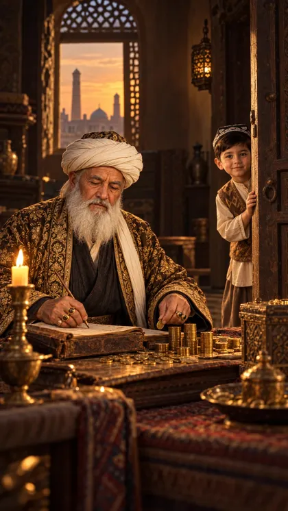
OvozAziz: «Bobo, osh tayyor.» Boy: «Keyin, bolam. Keyin.»
🎬 Veo prompti — 9:16 (tik), 8 s · shu rasmni yuklang
Rack focus: the shot starts focused on the old merchant counting gold coins at the desk, then the focus slowly shifts to the grandson peeking from the doorway and stays there; the camera itself barely moves. The merchant keeps stacking coins and writing in his ledger and never looks up. The grandson smiles hopefully and says a short line with small natural lip movement; the merchant answers with a short line without raising his head and waves his hand once; the boy's smile fades, he lowers his eyes and slowly steps back behind the door. The candle flame flickers gently, the sunset in the window slowly darkens. Keep the old merchant exactly as in the image for the whole clip: same face, long white beard, white turban with the patterned cap, gold-embroidered dark robe and gold rings. Keep the 7-year-old grandson exactly as in the image for the whole clip: same face, black embroidered doppi skullcap, brown embroidered vest and light shirt. Vertical 9:16, 8 seconds, realistic cinematic motion that fills all 8 seconds. Warm brown and amber candlelight look as in the image, deep soft shadows, gentle film grain. No text, no captions, no subtitles, no watermark, no new objects or people. No music, ambient sound only.
Men qo'shamanRang (cine), ovoz qatorlari, tanga jiringlashi soat tik-tikiga mos.
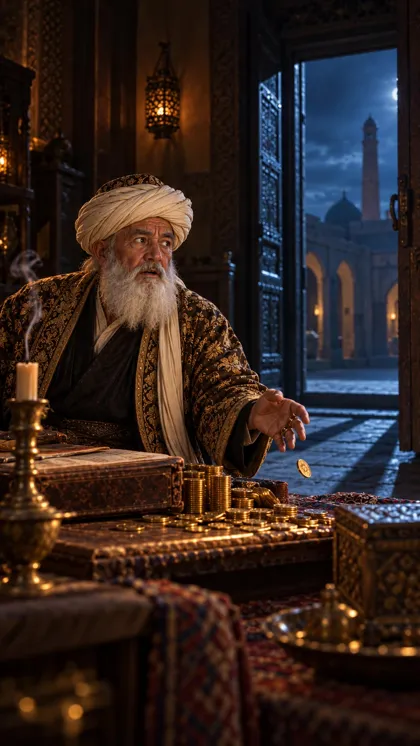
OvozVaqt: «Qo'rqma. Olib ketgani kelmadim. Hisobingni ko'rsatgani keldim.»
🎬 Veo prompti — 9:16 (tik), 8 s · shu rasmni yuklang
Slow push-in that follows the falling coin down to floor level, ending on a low shot with the doorway in the background. Speed ramp: the gold coin slips from the merchant's fingers and time slows into extreme slow motion as it falls, turning and catching the cold blue light; it hits the stone floor with a crisp impact and a few tiny golden sparks, then normal speed resumes and the coin spins. Meanwhile, in the open doorway, blue neon threads and golden sand swirl together and form TIME, who steps calmly into the room. TIME (a mysterious figure): a tall man slightly taller than a person, calm ageless face with no beard, his skin is translucent like smoky glass and fine glowing blue neon lines run under it like veins and clock circuits, golden sand slowly flows inside his body, his eyes glow soft gold, a small glowing golden hourglass is visible inside his chest through the translucent body; he wears a long hooded robe woven from thousands of thin blue neon threads, its hem dissolves into floating golden sand grains. He moves slowly and calmly, never scary. The merchant stays frozen, staring at TIME in shock; the smoke from the blown-out candle curls upward. Keep TIME looking exactly the same for the whole clip: translucent glass skin with blue neon veins, glowing gold eyes, golden hourglass in his chest, hooded robe of blue neon threads dissolving into golden sand. Keep the old merchant exactly as in the image for the whole clip: same face, long white beard, white turban with the patterned cap, gold-embroidered dark robe and gold rings. Nobody speaks, mouths stay closed. Vertical 9:16, 8 seconds, realistic cinematic motion that fills all 8 seconds. Warm brown and amber candlelight look as in the image, deep soft shadows, gentle film grain. No text, no captions, no subtitles, no watermark, no new objects or people. No music, ambient sound only.
Men qo'shamanSekinlashuv ramp.py bilan, tanga tekkanda «jiring», neon porlashini kuchaytiraman, xonani qoraytiraman.
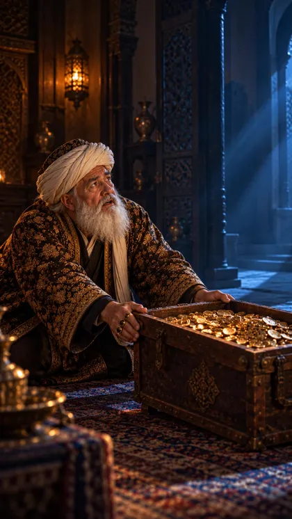
OvozBoy: «O'tgan yillarimni qaytar, hamma oltinimni ol!»
🎬 Veo prompti — 9:16 (tik), 8 s · shu rasmni yuklang
Smooth slow lateral dolly (truck) to the right, from the merchant's pleading face to TIME standing on the right, ending with both in frame. The old merchant pushes the heavy open chest of gold coins toward TIME with both hands, pleading, and speaks a short desperate line with natural lip movement. TIME looks down at him calmly with soft pity and slowly shakes his head once; golden sand drifts from the hem of his robe. TIME (a mysterious figure): a tall man slightly taller than a person, calm ageless face with no beard, his skin is translucent like smoky glass and fine glowing blue neon lines run under it like veins and clock circuits, golden sand slowly flows inside his body, his eyes glow soft gold, a small glowing golden hourglass is visible inside his chest through the translucent body; he wears a long hooded robe woven from thousands of thin blue neon threads, its hem dissolves into floating golden sand grains. He moves slowly and calmly, never scary. Keep TIME looking exactly the same for the whole clip: translucent glass skin with blue neon veins, glowing gold eyes, golden hourglass in his chest, hooded robe of blue neon threads dissolving into golden sand. Keep the old merchant exactly as in the image for the whole clip: same face, long white beard, white turban with the patterned cap, gold-embroidered dark robe and gold rings. Vertical 9:16, 8 seconds, realistic cinematic motion that fills all 8 seconds. Warm brown and amber candlelight look as in the image, deep soft shadows, gentle film grain. No text, no captions, no subtitles, no watermark, no new objects or people. No music, ambient sound only.
Men qo'shamanNeon porlashini kuchaytiraman, ovoz qatori.
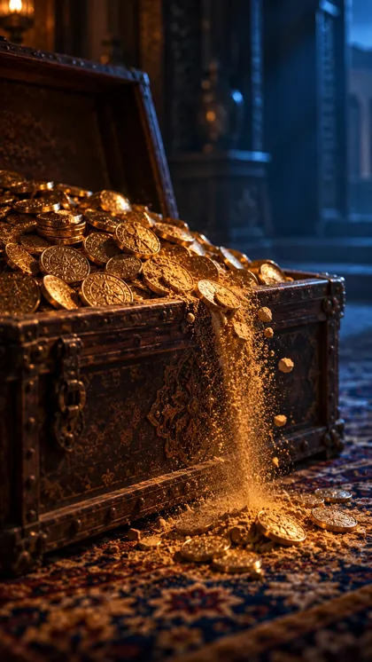
OvozVaqt: «O'tgan vaqt sotilmaydi. Umr faqat Allohning qo'lida. Men faqat ko'rsataman.»
🎬 Veo prompti — 9:16 (tik), 8 s · shu rasmni yuklang
Macro close-up, slow arc around the chest from left to right. The translucent glass hand of TIME, with blue neon veins and golden sand flowing inside, enters from the right and gently touches the gold coins with one finger; from the touch, the coins crumble one by one into fine golden sand that spreads over the whole pile until the entire chest is a flowing mass of golden sand pouring over the edge onto the carpet like a waterfall. TIME (a mysterious figure): a tall man slightly taller than a person, calm ageless face with no beard, his skin is translucent like smoky glass and fine glowing blue neon lines run under it like veins and clock circuits, golden sand slowly flows inside his body, his eyes glow soft gold, a small glowing golden hourglass is visible inside his chest through the translucent body; he wears a long hooded robe woven from thousands of thin blue neon threads, its hem dissolves into floating golden sand grains. He moves slowly and calmly, never scary. Only his hand is visible. Keep TIME looking exactly the same for the whole clip: translucent glass skin with blue neon veins, glowing gold eyes, golden hourglass in his chest, hooded robe of blue neon threads dissolving into golden sand. Vertical 9:16, 8 seconds, realistic cinematic motion that fills all 8 seconds. Warm brown and amber candlelight look as in the image, deep soft shadows, gentle film grain. No text, no captions, no subtitles, no watermark, no new objects or people. No music, ambient sound only.
Men qo'shamanQum shitirlashi, tegishda yengil jaranglash.
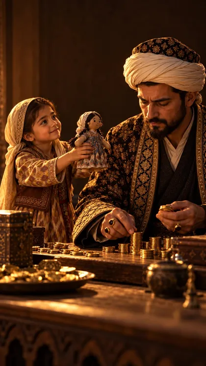
Ovoz(musiqa)
🎬 Veo prompti — 9:16 (tik), 8 s · shu rasmni yuklang
Slow push-in toward the little girl's face. She holds the cloth doll up toward her father with a hopeful smile; he keeps counting gold coins and does not look at her; her smile slowly fades, she lowers the doll, hugs it to her chest and turns away. Keep the father and the little girl exactly as in the image for the whole clip. Nobody speaks, mouths stay closed. Vertical 9:16, 8 seconds, realistic cinematic motion that fills all 8 seconds. Warm brown and amber candlelight look as in the image, deep soft shadows, gentle film grain. No text, no captions, no subtitles, no watermark, no new objects or people. No music, ambient sound only.
Men qo'shamanOltin xotira rangi, konturlar chiziladi, oxirida qumga aylanib to'kiladi (xotira.py).
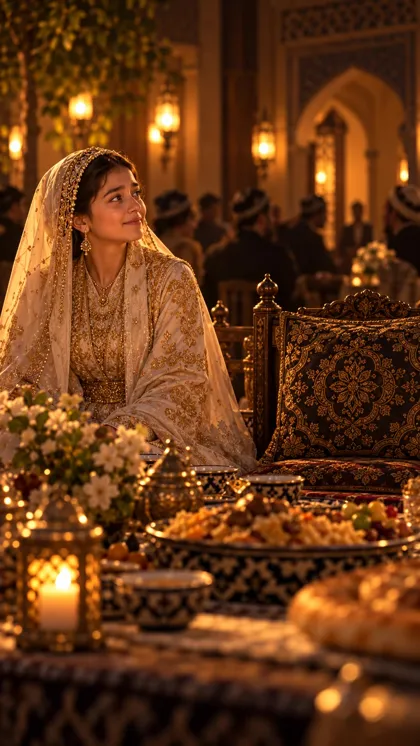
Ovoz(musiqa)
🎬 Veo prompti — 9:16 (tik), 8 s · shu rasmni yuklang
Slow pull-back (dolly out) that reveals the empty ornate seat beside the bride. The bride keeps looking toward the gate, hopeful, then her smile slowly fades and she lowers her eyes; candle flames flicker, guests move softly in the blurred background. Keep the daughter exactly as in the image for the whole clip: same face, light headscarf and ikat dress. Nobody speaks, mouths stay closed. Vertical 9:16, 8 seconds, realistic cinematic motion that fills all 8 seconds. Warm brown and amber candlelight look as in the image, deep soft shadows, gentle film grain. No text, no captions, no subtitles, no watermark, no new objects or people. No music, ambient sound only.
Men qo'shamanOltin xotira rangi + qum (xotira.py).
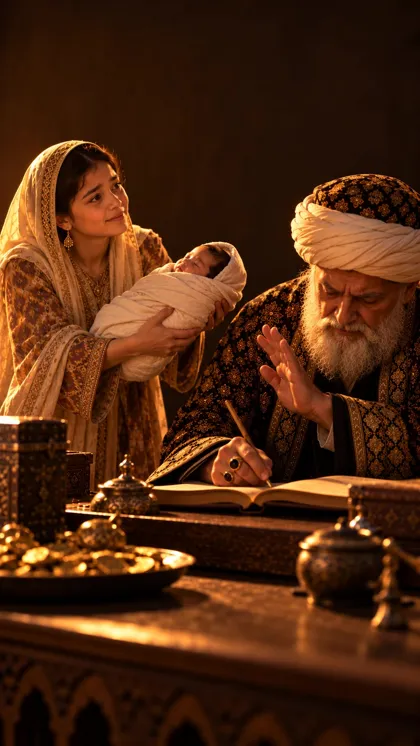
Ovoz(musiqa)
🎬 Veo prompti — 9:16 (tik), 8 s · shu rasmni yuklang
Rack focus from the newborn baby in the daughter's arms to the father's hand waving her away. The daughter holds the sleeping baby out toward her father with a shy smile; he keeps writing in his ledger and waves his hand without looking up; she slowly draws the baby back to her chest. Keep the daughter exactly as in the image for the whole clip: same face, light headscarf and ikat dress. Keep the old merchant exactly as in the image for the whole clip: same face, long white beard, white turban with the patterned cap, gold-embroidered dark robe and gold rings. Nobody speaks, mouths stay closed. Vertical 9:16, 8 seconds, realistic cinematic motion that fills all 8 seconds. Warm brown and amber candlelight look as in the image, deep soft shadows, gentle film grain. No text, no captions, no subtitles, no watermark, no new objects or people. No music, ambient sound only.
Men qo'shamanOltin xotira rangi + qum (xotira.py).
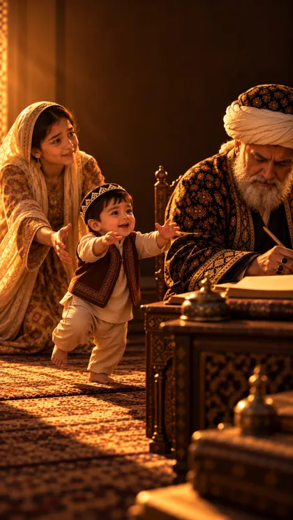
Ovoz(musiqa)
🎬 Veo prompti — 9:16 (tik), 8 s · shu rasmni yuklang
Low-angle tracking shot at the toddler's height, moving slowly with him. The toddler takes three wobbly first steps toward his grandfather with arms stretched out and a big smile; the grandfather keeps writing and does not turn; the toddler loses balance and sits down softly on the carpet, and his mother quickly kneels and lifts him into her arms. Keep the grandfather, the mother and the toddler exactly as in the image for the whole clip. Nobody speaks, mouths stay closed. Vertical 9:16, 8 seconds, realistic cinematic motion that fills all 8 seconds. Warm brown and amber candlelight look as in the image, deep soft shadows, gentle film grain. No text, no captions, no subtitles, no watermark, no new objects or people. No music, ambient sound only.
Men qo'shamanOltin xotira rangi + qum (xotira.py).
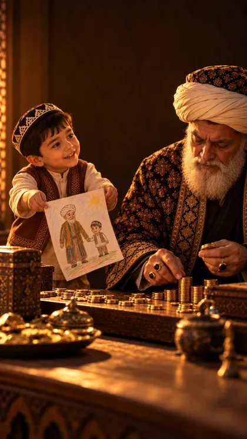
Ovoz(musiqa; oxirida Vaqt: «O'ttiz yil.»)
🎬 Veo prompti — 9:16 (tik), 8 s · shu rasmni yuklang
High angle, slow crane down that follows the drawing to the floor. Speed ramp: the grandson holds up his crayon drawing with a big smile, the grandfather keeps counting coins and does not look; the paper slips from the boy's fingers and drifts down in slow motion, swaying side to side, and lands softly on the floor; the boy's smile fades. Keep the 7-year-old grandson exactly as in the image for the whole clip: same face, black embroidered doppi skullcap, brown embroidered vest and light shirt. Keep the old merchant exactly as in the image for the whole clip: same face, long white beard, white turban with the patterned cap, gold-embroidered dark robe and gold rings. Nobody speaks, mouths stay closed. Vertical 9:16, 8 seconds, realistic cinematic motion that fills all 8 seconds. Warm brown and amber candlelight look as in the image, deep soft shadows, gentle film grain. No text, no captions, no subtitles, no watermark, no new objects or people. No music, ambient sound only.
Men qo'shamanOltin xotira rangi + qum, rasm tushganda sekinlashuv (ramp.py, ovoz: yumshoq).
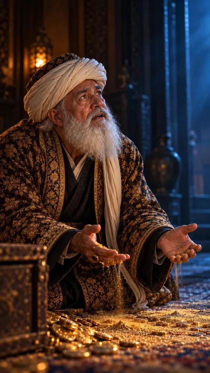
OvozBoy: «Bittasini qaytar...» Vaqt: «O'tganini hech kim qaytarolmaydi...»
🎬 Veo prompti — 9:16 (tik), 8 s · shu rasmni yuklang
Slow push-in toward the merchant's tearful face, ending in a close-up with TIME's hand in the soft-focus foreground. The old merchant kneels and cries quietly, a tear runs down his cheek, golden sand slips through his fingers, he whispers a short line with small lip movement. On the right TIME holds out the glowing golden hourglass from his chest in his open palm; its top half is dark so nobody can see how much sand is left, only a few bright grains keep falling. TIME (a mysterious figure): a tall man slightly taller than a person, calm ageless face with no beard, his skin is translucent like smoky glass and fine glowing blue neon lines run under it like veins and clock circuits, golden sand slowly flows inside his body, his eyes glow soft gold, a small glowing golden hourglass is visible inside his chest through the translucent body; he wears a long hooded robe woven from thousands of thin blue neon threads, its hem dissolves into floating golden sand grains. He moves slowly and calmly, never scary. Keep TIME looking exactly the same for the whole clip: translucent glass skin with blue neon veins, glowing gold eyes, golden hourglass in his chest, hooded robe of blue neon threads dissolving into golden sand. Keep the old merchant exactly as in the image for the whole clip: same face, long white beard, white turban with the patterned cap, gold-embroidered dark robe and gold rings. Vertical 9:16, 8 seconds, realistic cinematic motion that fills all 8 seconds. Warm brown and amber candlelight look as in the image, deep soft shadows, gentle film grain. No text, no captions, no subtitles, no watermark, no new objects or people. No music, ambient sound only.
Men qo'shamanQum soatining yorug'ini kuchaytiraman.
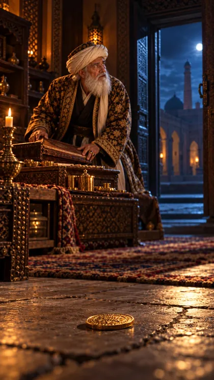
OvozAziz: «Bobo, osh sovib qoldi.» Boy: «Hozir, bolam! Hozir!»
🎬 Veo prompti — 9:16 (tik), 8 s · shu rasmni yuklang
Rack focus from the gold coin on the floor in the foreground to the old merchant in the background. The coin wobbles slightly and settles flat on the stone floor; the candle flame steadies and grows warm; the merchant closes his ledger, stands up, turns toward the door and calls out a short warm line with natural lip movement, with a soft new smile. Keep the old merchant exactly as in the image for the whole clip: same face, long white beard, white turban with the patterned cap, gold-embroidered dark robe and gold rings. Vertical 9:16, 8 seconds, realistic cinematic motion that fills all 8 seconds. Warm brown and amber candlelight look as in the image, deep soft shadows, gentle film grain. No text, no captions, no subtitles, no watermark, no new objects or people. No music, ambient sound only.
Men qo'shamanTanga to'xtaganda yengil jiring.
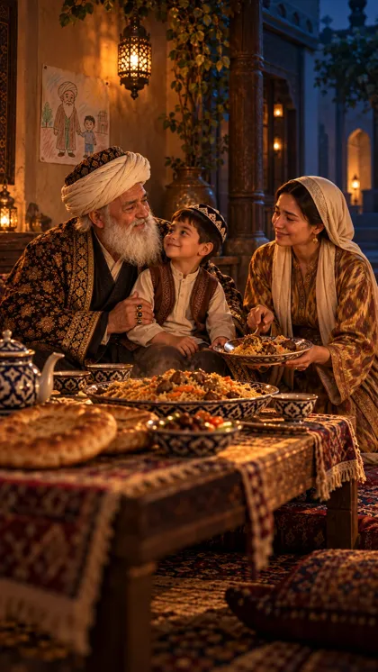
Ovoz(musiqa)
🎬 Veo prompti — 9:16 (tik), 8 s · shu rasmni yuklang
Slow dolly out and crane up, ending wide over the evening courtyard. The grandfather laughs softly and strokes his grandson's head, the boy laughs back; the daughter serves him a plate of osh with happy tears in her eyes; lanterns glow, steam rises from the osh. In the shadow of the porch corner TIME stands silently and watches them with a soft smile; his blue neon lines slowly turn warm gold, then he dissolves into floating golden sparks and disappears. TIME (a mysterious figure): a tall man slightly taller than a person, calm ageless face with no beard, his skin is translucent like smoky glass and fine glowing blue neon lines run under it like veins and clock circuits, golden sand slowly flows inside his body, his eyes glow soft gold, a small glowing golden hourglass is visible inside his chest through the translucent body; he wears a long hooded robe woven from thousands of thin blue neon threads, its hem dissolves into floating golden sand grains. He moves slowly and calmly, never scary. Keep TIME looking exactly the same for the whole clip: translucent glass skin with blue neon veins, glowing gold eyes, golden hourglass in his chest, hooded robe of blue neon threads dissolving into golden sand. Keep the old merchant exactly as in the image for the whole clip: same face, long white beard, white turban with the patterned cap, gold-embroidered dark robe and gold rings. Keep the 7-year-old grandson exactly as in the image for the whole clip: same face, black embroidered doppi skullcap, brown embroidered vest and light shirt. Keep the daughter exactly as in the image for the whole clip: same face, light headscarf and ikat dress. Nobody speaks, mouths stay closed. Vertical 9:16, 8 seconds, realistic cinematic motion that fills all 8 seconds. Warm brown and amber candlelight look as in the image, deep soft shadows, gentle film grain. No text, no captions, no subtitles, no watermark, no new objects or people. No music, ambient sound only.
Men qo'shamanOltin uchqunlarni kuchaytiraman.
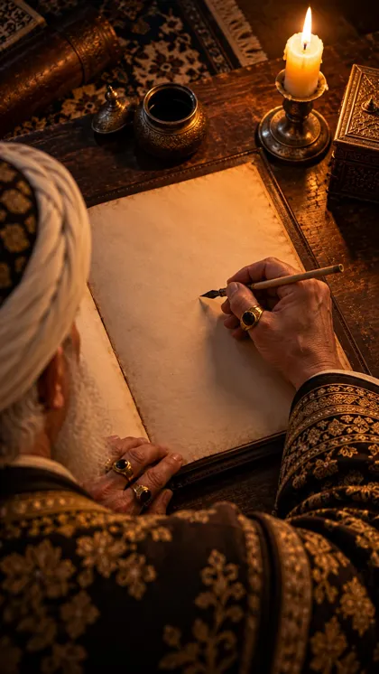
OvozDiktor: «O'tgan vaqt qaytmaydi. Shuning uchun — bugun va hozir.»
🎬 Veo prompti — 9:16 (tik), 8 s · shu rasmni yuklang
Locked-off static top-down camera, it does not move. The old merchant's hand dips the pen into the ink pot, lifts it and holds it still over the blank page for a few seconds, then slowly closes the ledger; the candle flame flickers. The page stays completely blank, no letters or lines are drawn. Nobody speaks, mouths stay closed. Vertical 9:16, 8 seconds, realistic cinematic motion that fills all 8 seconds. Warm brown and amber candlelight look as in the image, deep soft shadows, gentle film grain. No text, no captions, no subtitles, no watermark, no new objects or people. No music, ambient sound only.
Men qo'shamanSahifaga «Foyda — bugun va hozir.» yozuvi qo'lda yozilgandek (kod), keyin qora ekran: VAQT.
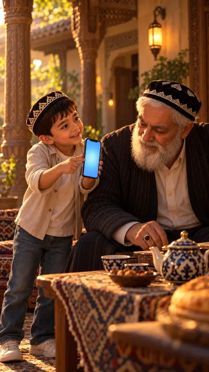
OvozAziz: «Bobo, bugungi AI maslahati!» Diktor: «Vaqtingizni bekorga ketkazmang...»
🎬 Veo prompti — 9:16 (tik), 8 s · shu rasmni yuklang
Handheld camera with subtle natural shake, slowly moving closer to the two of them. The grandson shows the smartphone to his grandfather and says a short excited line with natural lip movement, pointing at the screen; the grandfather leans in, reads, laughs warmly and nods; morning sunlight flickers through the leaves. The phone screen stays plain soft blue the whole time, with no text and no interface. Keep the grandfather exactly as in the image (black doppi, white beard, dark quilted chopon, light shirt) and the boy exactly as in the image (doppi, light shirt, jeans, sneakers) for the whole clip. Vertical 9:16, 8 seconds, realistic cinematic motion that fills all 8 seconds. Warm brown and amber candlelight look as in the image, deep soft shadows, gentle film grain. No text, no captions, no subtitles, no watermark, no new objects or people. No music, ambient sound only.
Men qo'shamanOldin o'tish: eski kadr qumga aylanadi → «Bugun». Telefon ekranida «Kun maslahati», ko'k neon chiziq bo'lib ko'tariladi (kod); kanal va bot havolasi.